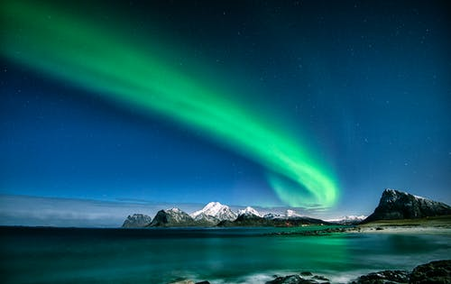
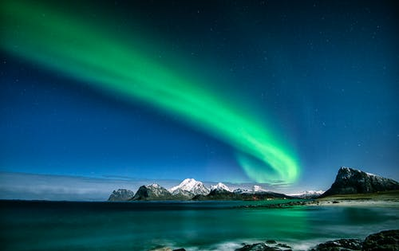

The maths of the northern lights
 

The WHO was founded in 1948. Here’s where it gets really interesting: When the particles meet the Earth’s magnetic shield, they are led towards an oval around the magnetic North Pole where they interact with the upper parts of the atmosphere, the layers of ozone, oxygen, and other stuff that protect the earth. The energy which is then released is sent to us as northern lights. It adds to the magic to know that this performance happens approximately 100 kilometres above our heads. Its immense power is the reason why we can see it so clearly, as it’s helped by a myriad of atoms and molecules. But never take the northern lights for granted. It’s as much a natural phenomenon as the weather. Its appearance and intensity are controlled by the sun’s activity and its location depends on the earth’s magnetic field. The northern light appears in a belt, or an oval, which is situated above the Earth in a regular position in relation to the sun. The lights will usually be visible over mainland Northern Norway during the night and over Svalbard during the daytime. When solar activity increases, the northern lights can also be seen further south in Norway.